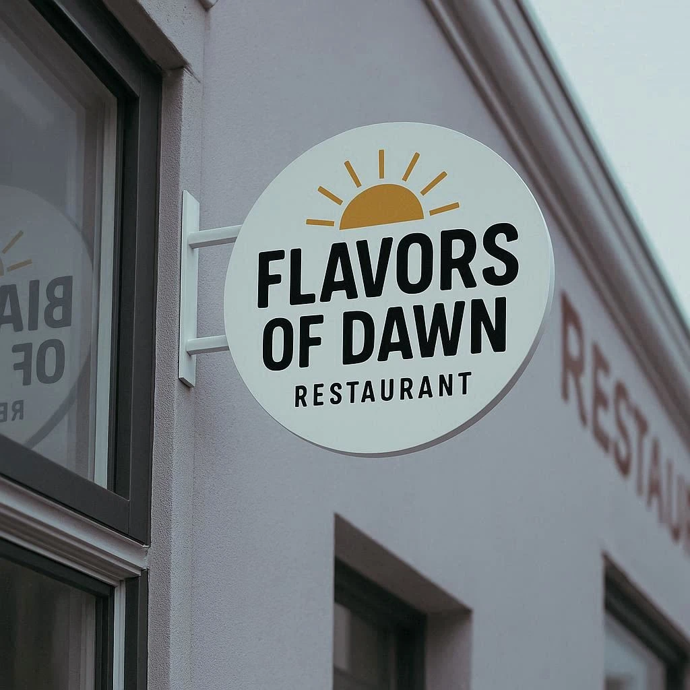

Our Story
Cooking with Passion since 1998
We believe that food is not just about sustenance, but about connection. Situated in the heart of San José, every dish tells a story of organic ingredients, ancestral preparation, and a profound love for the culinary arts.
— Executive Chef